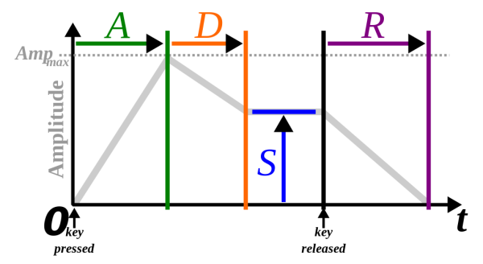

Nous disposons de plusieurs variables pour contrôler un son synthétique dans le temps. Les plus évidentes sont les contrôles manuels. Les synthétiseurs sont habituellement équipés de deux molettes qui sont placées à la gauche du clavier. L’une permet d’effectuer un portamento (bend) cher aux guitaristes ou un vibrato avec un geste de va-et-vient. La fonction attribuée à l’autre molette dépend du modèle du synthétiseur et parfois, on peut la personnaliser. Par exemple, elle peut régler la prégnance d’un filtre ou d’un trémolo.
En outre, il est possible d’automatiser la variation d’autres paramètres. Ce type de contrôle peut varier à des moments choisis ou varier continuellement. Il est nécessaire de prendre conscience du type de signal avec lequel nous travaillons. Les signaux audio génèrent du son, mais les signaux de contrôle permettent de modifier automatiquement un ou plusieurs paramètres et donc d’altérer le résultat sonore en conséquence.
Un générateur d’enveloppe ne produit pas un signal continu. Pour qu’il génère un signal de contrôle, il doit être déclenché. Par exemple, lorsqu’un musicien appuie sur une touche d’un clavier. Le générateur d’enveloppe le plus courant produit un signal structuré en quatre étapes. Ces étapes sont dénommées attaque, décroissance, soutien et relâchement (attack, decay, sustain, release), ou par l’acronyme ADSR. L’usage classique de ce type de générateur est de varier le volume sonore dans le temps.

Dans ce cadre, l’attaque détermine la durée d’émergence du son. Cette section est utile pour attribuer un type au son. Les instruments à vent ont une attaque lente par rapport aux instruments à percussion. La décroissance correspond à la section après l’attaque et elle indique le temps avant que le volume se stabilise. Le maintien est la section stable d’un son. Sa valeur n’indique pas une durée mais un niveau de volume. Le relâchement correspond à la durée que le son met à disparaître. Cette dernière phase s’exécute lorsque le capteur qui a activé l’enveloppe est relâché.
Notre système auditif nous permet de percevoir les fréquences comprises entre 20 Hz et 20 kHz. Cet intervalle est théorique et il évolue avec l’âge des individus. L’unité de mesure des fréquences en Hertz indique le nombre de cycles par seconde qu’effectue un signal périodique. En dessous de 20 Hz, notre système auditif ne perçoit plus un signal comme un son continu, mais comme des phénomènes distincts qui se manifestent périodiquement. Un oscillateur basse-fréquence (ou LFO pour Low frequency oscillator) est similaire à un oscillateur sonore. Mais la fonction de ce type d’oscillateur est de varier périodiquement un paramètre quelconque, généralement à une fréquence inférieure à 20 Hz.
Pour ce faire, l’utilisateur détermine la fréquence, l’amplitude et la forme d’onde d’un oscillateur basse-fréquence. Puis, il sélectionne le paramètre qu’il désire varier périodiquement (y compris le paramètre d’un autre oscillateur basse-fréquence). Un oscillateur peut varier un ou plusieurs paramètres, mais un paramètre peut aussi être affecté par plusieurs oscillateurs.
Dans la tradition musicale, moduler la fréquence d’un son provoque un vibrato et moduler son amplitude cause un trémolo. En synthèse sonore, on peut réaliser ces effets grâce à un oscillateur basse-fréquence. Cependant, la terminologie modulation de fréquence peut porter à confusion, car elle est aussi employée pour désigner une technique de synthèse sonore qui emploie des fréquences de modulation extrêmes. Moduler un paramètre est de plus une technique utilisée pour créer des effets sonores et le terme modulation est parfois utilisé pour catégoriser certains traitements.
Les générateurs d’enveloppe et les oscillateurs de modulation sont deux types différents de contrôle automatique. Mais, ils sont généralement utilisés conjointement pour enrichir considérablement l’intérêt d’un son synthétique en le rendant évolutif. Toutefois, la conception d’un synthétiseur est une étape importante pour travailler les possibilités sonores. Dans la suite de ces pages, nous aborderons le fonctionnement de quelques techniques de synthèse.